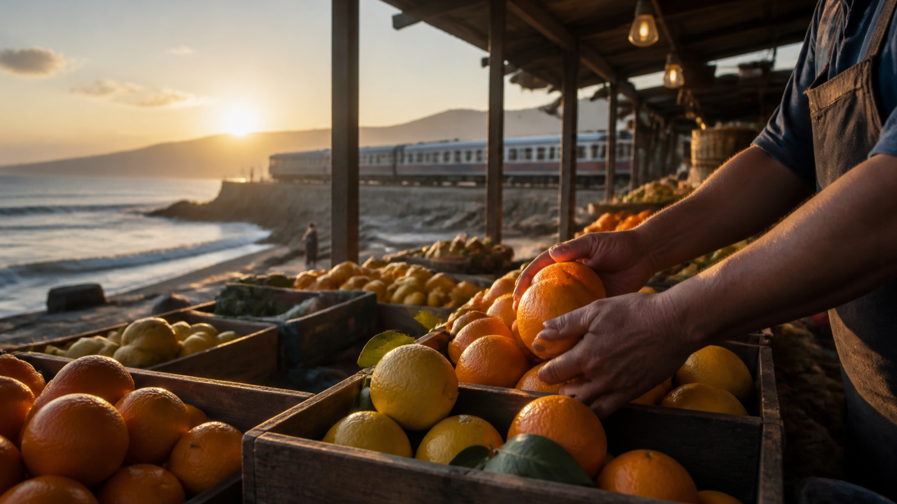

Un cuaderno de viaje imaginario: 8 escenas para contar comida y lugares con MiniMax H3
Con MiniMax H3, hay viajes que empiezan con un boleto y otros con una libreta. Este cuaderno pertenece al segundo grupo: reúne ocho escenas imaginarias para pensar cómo se siente un lugar antes de convertirlo en itinerario, recomendación o recuerdo público.

Nota de transparencia: la imagen y las escenas de esta entrada fueron creadas con asistencia de IA. No documentan un destino, negocio, receta ni tradición reales.
MiniMax H3 aparece aquí como herramienta de bocetado. La documentación de MiniMax describe un modelo que puede recibir texto, imágenes, video y audio y producir clips de 4 a 15 segundos en 768P o 2K. Esas especificaciones ayudan a organizar una escena corta; no convierten una imagen generada en prueba cultural o turística.
Página 1: la ciudad antes del ruido
La primera escena ocurre cuando las calles todavía no han decidido si están vacías o a punto de llenarse. Una bicicleta cruza el fondo, una cortina metálica sube y la luz alcanza solo la parte alta de las fachadas.
No le pondría un nombre de ciudad sin referencias fiables. Una arquitectura “parecida” no basta para identificar un lugar real, y una escena atractiva puede mezclar épocas o regiones sin avisar.
Página 2: un mercado contado por las manos
Las manos pesan cítricos, doblan papel y acomodan una caja de madera. La cámara se mantiene cerca de la mesa; no intenta resumir todo el mercado en un solo plano.
La nota al margen es importante: si la escena se publica como parte de una guía real, los ingredientes, utensilios, prendas y letreros deben contrastarse con fuentes locales. Si solo es ficción visual, debe decirlo.
Página 3: el paisaje desde una ventana
El borde de la ventanilla permanece fijo mientras pasan campos húmedos, estaciones pequeñas y colinas con niebla. El interior estable hace visible el viaje sin inventar una atracción concreta.
Este tipo de escena funciona bien como transición porque no promete que una ruta ferroviaria exista. Para una publicación informativa, habría que verificar línea, acceso, horarios y paisaje por separado.
Página 4: del ingrediente al plato, sin fingir una receta
Un ingrediente, una acción y un plato terminado necesitan planos distintos. La ficción puede explorar color y textura, pero no debe enseñar un proceso culinario falso como si fuera tradición local.
Si el orden de preparación importa, la secuencia tiene que partir de una receta comprobada y ser revisada por alguien que conozca el plato. La fantasía debe permanecer en el tratamiento visual, no en el dato.
Página 5: una ruta de un solo color
Azulejos, flores, textiles y comida comparten un tono azul verdoso. El color une la secuencia, aunque los objetos pertenezcan a espacios diferentes.
Aquí el riesgo no es técnico, sino cultural: convertir una región en una paleta decorativa. Una nota breve sobre el carácter imaginario de la serie evita que el color sustituya a la historia real del lugar.
Página 6: el rincón que no se recomienda todavía
Una librería estrecha, un patio con sombra o un sendero junto al agua puede parecer “secreto” o “fuera de ruta”. Esa etiqueta invita a imaginar acceso, tranquilidad y disponibilidad.
No usaría la escena para recomendar un sitio hasta confirmar que existe, que se puede visitar y que la visita no perjudica a residentes o al entorno. La imagen puede inspirar una pregunta; no debe responderla por adelantado.
Página 7: una plaza cambia de época
La cámara queda fija mientras la luz, la ropa y algunos elementos del espacio sugieren otro momento histórico. Es una recreación artística, no una reconstrucción verificable.
Para publicarla, añadiría una etiqueta visible como “escena imaginada” y evitaría fechas, uniformes o monumentos específicos que no hayan sido investigados.
Página 8: una postal que deja espacio para una nota
El último plano no necesita un eslogan generado. Basta con una composición estable y un área limpia donde después pueda escribirse el nombre correcto del lugar, la fuente o una aclaración editorial.
La postal funciona mejor cuando admite corrección. El texto exacto, los nombres propios y cualquier dato práctico pertenecen a la edición humana.
Dos prompts para probar el tono con MiniMax H3
Estas versiones en español son borradores creativos. La documentación consultada acepta descripciones de texto, pero no promete resultados equivalentes para cada idioma.
Mercado costero imaginario
8 segundos, 16:9. Primer plano observacional en un mercado costero ficticio al amanecer. Una persona coloca cítricos en cajas de madera mientras el resto del espacio abre lentamente. La cámara avanza con suavidad a la altura de las manos y termina en una vista estable de la mesa. Luz lateral cálida, sonido de cajas, pasos y aves lejanas. No generar carteles legibles, nombres de lugares ni símbolos culturales específicos.
Trayecto regional sin destino identificado
10 segundos, 9:16. Vista desde el interior de un tren regional imaginario. El borde de la ventana permanece fijo mientras campos húmedos, estaciones pequeñas y colinas con niebla pasan al fondo. Movimiento natural del vagón, reflejos suaves y sonido rítmico de las vías. No incluir monumentos, nombres de estaciones ni señales legibles. Terminar cuando el paisaje se abre hacia un valle amplio.
Lo que revisaría antes de compartir una escena
- ¿La entrada dice con claridad que la escena es generada o imaginaria?
- ¿Un nombre, receta, edificio o costumbre podría interpretarse como dato real?
- ¿La representación mezcla regiones cercanas como si fueran intercambiables?
- ¿Las personas aparecen como decorado en vez de sujetos con contexto?
- ¿Una recomendación implica acceso, seguridad o disponibilidad no comprobados?
- ¿Los rótulos y nombres se añadirán después desde fuentes verificadas?
Este cuaderno no sustituye una conversación con residentes, cocineros, historiadores o guías locales. Solo sirve para ordenar una intención visual antes de decidir si merece convertirse en información pública. Si se evalúa una vía de acceso distinta de la oficial, una opción de API de MiniMax H3 en Best Image AI conduce a un servicio de terceros; via=shixi88 es un parámetro de seguimiento y no demuestra que sea la opción más barata. Hay que verificar disponibilidad y condiciones antes de usarla.
Una pregunta para dejar abierta
Cuando una escena generada se inspira en un lugar real, ¿qué tipo de etiqueta te parece suficiente: “recreación”, “escena imaginada”, una explicación más larga, o ninguna imagen hasta tener referencias locales? Con MiniMax H3 o cualquier otra herramienta, la etiqueta no reemplaza la investigación local.
Referencias
- Documentación oficial de video de MiniMax H3 — consultada el 24 de agosto de 2026.
Etiquetas sugeridas: viajes, comida, escritura, ia, creatividad
Divulgación de enlaces: esta copia local incluye un enlace identificado a Best Image AI, un servicio de terceros, con el parámetro de seguimiento via=shixi88. No se ha verificado ninguna afirmación de precio mínimo.